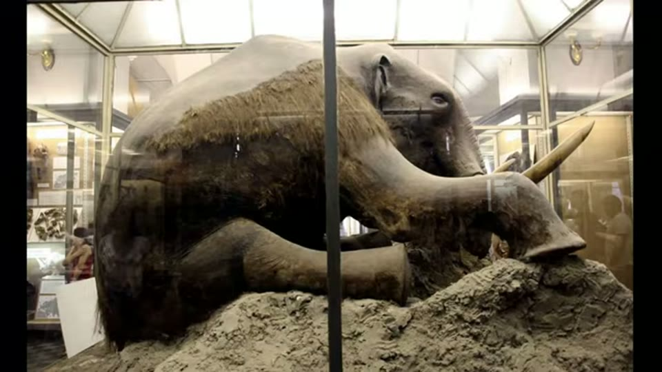
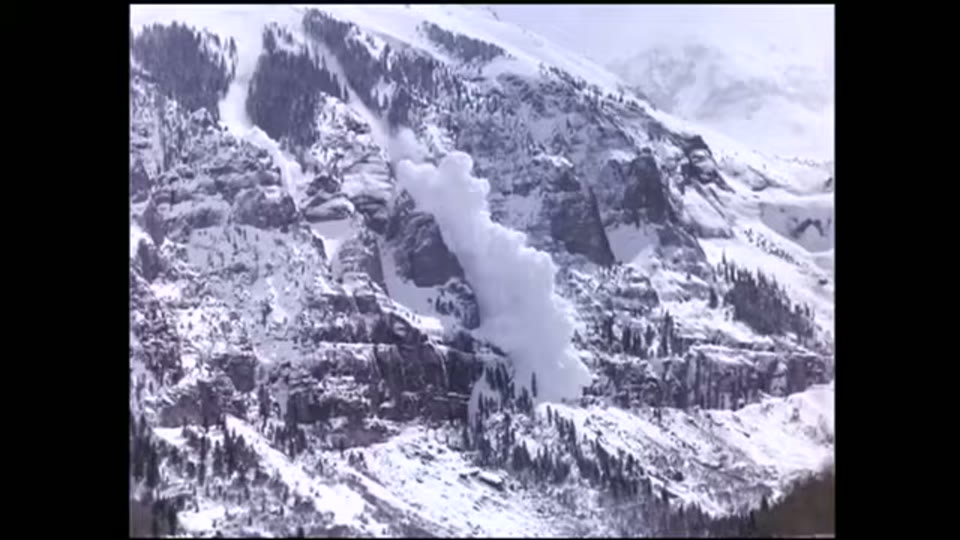

Curious Being
Flash-Frozen Mammoths: What Really Happened in the Ice Age?
Tina · 20 min · watch on YouTube · summarised 2026-09-28
The flash-freeze story is a fixture of catastrophist ancient history: mammoths grazing peacefully, a sudden cataclysm, millions of animals frozen where they stood with buttercups still in their mouths. The causes usually named are a magnetic pole flip, the Younger Dryas comet, or the biblical flood.
She takes it apart, and the tool she uses is the mammoths' own dates.
The objection that does the work
02:17–05:09 The frozen animals are not contemporaries. They are separated by tens of thousands of years, and almost all the well-preserved carcasses are older than 20,000 years — long before the Younger Dryas. She runs through the named specimens:
| mammoth | where | date as she gives it |
|---|---|---|
| Yuka, the best preserved ever found | Siberia | AMS radiocarbon on a rib fragment: 34,300 years |
| Lyuba, a calf | Yamal Peninsula | died 41,800 years ago |
| Jarkov | Taymyr Peninsula | about 20,000 years |
| Yukagir, an adult male with stomach and intestine preserved | Arctic Siberia | 22,500 years BP |
| Nun cho ga, a baby, found 2022 | Yukon, Canada | 30,000 to 35,000 years |
| Berezovka, the find that started the flash-freeze idea, discovered 1900 | Siberia | about 44,000 years |
These frozen mammoths dated to various times — which means whatever caused the "flash freezes" were likely recurring events.
A flood, a pole flip and a comet are each single events. On the dates, none of them can be the answer.

The specimen that started the flash-freeze story, in the posture the video has to explain.
The pole flip, dismantled
05:09–08:44 She takes the claim seriously enough to name where it comes from — Immanuel Velikovsky, and **Chan Thomas's *The Adam and Eve Story***, which was classified by the CIA in the 1960s and declassified later, a fact she notes has fuelled suspicion that its catastrophic pole reversal was real.
Then the numbers. Pole reversals have happened 183 times in the last 83 million years, with hundreds of thousands of years between them — so the claim that destructive flips recur every 6,000 years "is plainly not true". Reversals take thousands of years, not a day. The field weakens but does not disappear, and the magnetosphere and atmosphere keep working.
She reports the Laschamps event — the last geomagnetic excursion, about 41,500 years ago — and a 2021 study suggesting it produced climate changes, adding that the research is disputed.
And then she quotes the other side directly, from Alan Buis of NASA's Jet Propulsion Laboratory:
Plant and animal fossils from the period of the last major pole reversal "don't show any big changes. Deep ocean sediment samples indicate glacial activity was stable." … "There's no evidence that Earth's climate has been significantly impacted by the last three magnetic field excursions, nor by any excursion event within at least the last 2.8 million years." … "Geologic and fossil records from previous reversals show nothing remarkable, such as doomsday events or major extinctions."
What runs under that passage on screen is an artist's painting of elk in a wooded valley. The strongest counter-evidence in the video is illustrated with wildlife art.
Most mammoths were not flash frozen at all
08:44–11:49 The second deflation, and it is the more careful one. Well-preserved frozen carcasses are a very small fraction of the mammoth remains in Siberian permafrost; the great majority of bones decayed normally. So whatever happened, it did not happen to most of them.
And the frozen ones died in different ways:
- the Sopkarga mammoth, found 2012 and dated to 48,000 years, was killed by humans — the carcass carries multiple spear wounds
- Lyuba and Khroma, both over 40,000 years old, choked on mud and suffocated, on the evidence of CT scans; Lyuba's showed a solid mass of fine-grained sediment blocking the air passages in her trunk
That leaves two specimens that might genuinely show quick freezing: Yukagir and Berezovka, the ones found with green grass. She says plainly that two cases cannot be generalised to the rest — "it's sensible and scientific to treat them case by case."
What the two actually show. Berezovka died of suffocation, with a broken pelvis, ribs and right foreleg, which scientists have attributed to a fall. E. W. Pfizenmayer, who was there, is quoted:
Its death must have occurred very quickly after its fall, for we found half-chewed food still in its mouth, between the back teeth and on its tongue… The food consisted of leaves and grasses, some of the later carrying seeds. We could tell from these that the mammoth must have come to its miserable end in the autumn.
Suffocation is implied for four more: Dima, a calf whose "pulmonary alveoli suggested death by asphyxia" after "great exertion just before death"; a male mammoth on Bolshoi Lyakhov Island; and two woolly rhinos.
Siberia was not Siberia
12:02–14:41 The mammoths could not live in the modern landscape. Today's summer growth — bog and muskeg — is too poor for large grazers, and a mammoth needed 200 to 300 kg, about 400 pounds, of food a day. Add the woolly rhinos, horses and bison, and the region must have carried a great deal of vegetation, which means a long growing season, milder winters and little permafrost.
Her structural point: the Siberian lowlands were never glaciated during the last glacial period, not even at the Last Glacial Maximum, while North America and Europe lay under thick ice. Glacial cooling was not uniform — and Siberia, she says, was warmer than it is now.
The map she puts up says the first half and not the second. It is a model field captioned Last Glacial Maximum Surface Air Temperature — Difference from Preindustrial, and eastern Siberia is shaded in the −2 to −6 °C range: cooler than the modern baseline, but far less cooled than the North Atlantic and the ice margins. Non-uniform cooling is exactly what it shows. "Warmer than today" is not.

Her point that glacial cooling was not uniform, and that Siberia's lowlands were never glaciated.
The proposal: avalanche
15:07–19:41 Her replacement explanation, and she frames it as a proposal.
A fully developed avalanche can weigh a million tons and travel faster than 200 mph, 320 km/h. They happen in every season; the western United States alone gets about 100,000 a year, and avalanches kill more than 150 people worldwide annually. A human body is about three times denser than avalanche debris and sinks; when the flow stops it sets like concrete, and average burial depth is 1.3 m, one to one and a half tonnes of snow. Most avalanche deaths are asphyxiation; the others are trauma and hypothermia. Survival is about 92% if you are dug out within 15 minutes.
Applied to mammoths: animals grazing in valleys and at the foot of slopes, near avalanche chutes, get buried fast and deep, suffer trauma on the way down and suffocate under the snow. A denser carcass would sink to the bottom of the debris — which she offers as an explanation for Berezovka being found upright in silty gravel. Later avalanches piling on top would aid preservation.
Avalanches can explain the following features of the frozen mammoth puzzle: repeated frozen incidents ranging from different times, megafauna being quickly frozen while grazing on grass, animals dying of suffocation with some having bodily injuries.

Her proposed mechanism: fast deep burial, trauma and suffocation.
What you can check yourself
- Every mammoth she names is a documented specimen with a published date — Yuka, Lyuba, Jarkov, Yukagir, Nun cho ga, Berezovka, Sopkarga, Khroma, Dima. The spread of those dates is the whole argument and anyone can verify it in an afternoon.
- The Sopkarga spear wounds and the CT scans of Lyuba and Khroma are published results.
- 183 reversals in 83 million years, and the intervals between them, are standard palaeomagnetism.
- Alan Buis's JPL piece is online and can be read in full, including the parts she does not quote.
- The Laschamps event and the disputed 2021 study are both findable.
- Pfizenmayer's account of the Berezovka excavation is published and is a primary source from the dig.
- That the Siberian lowlands were unglaciated at the Last Glacial Maximum is standard glacial geology, and the ice-sheet maps are everywhere.
- Avalanche statistics — speeds, burial depths, survival curves, the American Avalanche Association's graph — are published by avalanche centres.
What the video does not settle
- Snow is not permafrost, and the video does not bridge the two. An avalanche buries a carcass in snow, which melts. Preservation for forty thousand years needs the body to end up enclosed in frozen ground or sediment. How the one becomes the other is the central question the proposal raises and it is not addressed.
- Berezovka's silty gravel points at sediment, not snow. She uses the upright position in silty gravel as support, but the material the animal was found in is the thing an explanation has to account for, and a snow avalanche does not obviously deliver it.
- Her own temperature map contradicts the sentence it runs under. The figure is an anomaly field — difference from preindustrial — and it puts Siberia several degrees colder than today, not warmer. The productive mammoth steppe was cold and dry rather than warm, which does not damage her ecological point but does make the sentence wrong. It is the second time in the corpus an anomaly map has been read as absolute temperature; the other is in the Carolina Bays entry.
- Whether the two find-spots are avalanche terrain is asserted. Both are said to be in "areas with extensive mountain ranges"; no topography, slope angle or distance to a chute is given for either the Berezovka River site or northern Yakutia, and that is precisely what the proposal needs.
- The avalanche statistics are about modern people in recreational terrain. Burial depths and survival times for skiers do not transfer to a six-tonne animal without argument, and none is made.
- Two cases are a small base for a general mechanism, which she says herself about the flash freeze and does not say about the avalanche.
- Most sources here are unnamed. Buis and Pfizenmayer are identified; the 2021 Laschamps study, the CT scan work, the feeding-rate figure and the avalanche survival graph are attributed to "a study", "scientists" or an organisation without a citation.
- "This is a controversial subject" overstates it. That glacial cooling was not uniform, and that the Siberian lowlands escaped glaciation, are ordinary findings rather than a challenge to the field.
- The avalanche proposal is not tested against what would distinguish it. Mudflow, riverbank collapse and burial in loess or alluvium would also produce fast burial, suffocation and trauma, and the sediments the carcasses are found in would tell them apart. That comparison is not made.
See also
Was an Advanced Civilization Wiped Out by a 12,800-Year-old Comet at Younger Dryas? — the impact hypothesis she rules out here on dates.
What Caused the Fall of a Previous Advanced Civilization? — the collapse date she does accept, and the megafaunal extinction debate summarised there.
Carolina Bays Mystery — the other entry where she dismantles a catastrophist claim the alternative community is attached to, and then builds a larger one on the result.